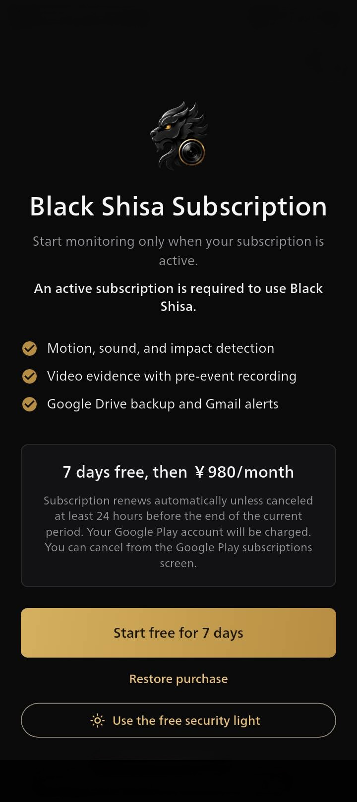

無料のセキュリティライトを開く。
サブスクリプション画面またはアプリの設定から直接開けます。有料プランへの加入は不要です。

無料機能・サブスクリプション不要
BlackShisa - Parking Dashcam Appは、カメラを使わずにスマートフォンのライトを好みの間隔で点滅させ、駐車中の車で使えるセキュリティライトに変えます。
Android版公開中。iPhone版は近日公開予定です。
余った端末に、新しい役割を
余ったスマートフォンを車内に安全に固定し、背面ライトが外から見える方向に向けて、セキュリティライトを開始します。この機能は、BlackShisa - Parking Dashcam Appの有料監視機能とは独立して利用できます。

数分で設定
追加の機器や配線を用意しなくても、手元にあるスマートフォンを車用セキュリティライトとして使えるよう、操作をシンプルにしています。
サブスクリプション画面またはアプリの設定から直接開けます。有料プランへの加入は不要です。
点灯時間、消灯時間、対応端末では明るさを設定できます。
停止する電池残量と最長時間を選びます。充電中は電池残量による停止を無効にでき、画面を暗くすることもできます。
ライト機能は無料
セキュリティライトはBlackShisa - Parking Dashcam App内で無料で利用できます。月額サブスクリプションでは、動体・音声・衝撃検知、検知前からの証拠映像、Google Driveバックアップ、Gmail通知を利用できます。

安全に配慮して使用
セキュリティライトは、不審な接近をためらわせることを目的とした機能です。見え方は端末、設置位置、ガラス、周囲の明るさや環境によって変わります。運転を妨げないよう端末を固定し、他の運転者へ光を向けず、地域の規則に従って使用してください。
余ったスマートフォンを、もう一度活用
BlackShisa - Parking Dashcam Appをダウンロードし、「無料のセキュリティライトを使う」を選択してください。